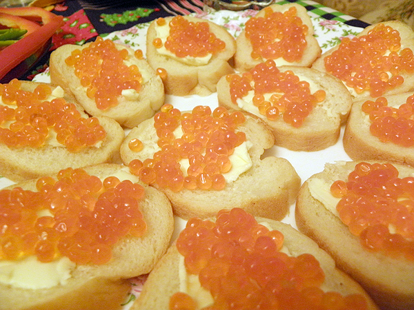
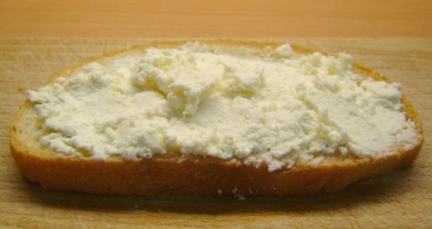
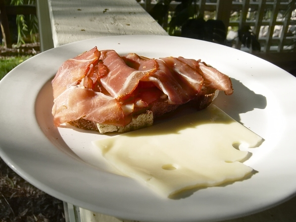
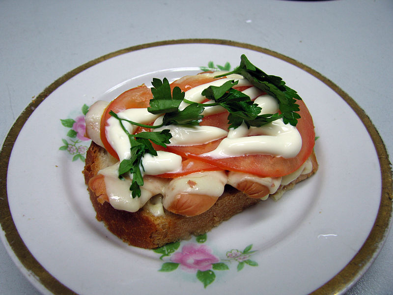

Бутерброд
Бутербро́д
(от
нем.
Butterbrot -
хлеб
с маслом
-
закуска
, представляющая собой ломтик хлеба или
булки
, на который положены дополнительные пищевые продукты [1].
Существует огромное количество видов бутербродов - от классических с
колбасой
или
сыром
до многослойных из различных сортов мяса, овощей, зелени и соусов
или паштетов. Также бутерброд может состоять только из хлеба и
сливочного масла, возможно с сахаром, вареньем, мёдом или солью.
Сэндвич
- бутерброд, состоящий из двух и более кусков хлеба. Бутерброды
широко распространены, так как они быстры в приготовлении, удобны в
переноске и
не требуют использования приборов
.
Самый распространённый вид бутербродов - ломтик хлеба или булки с каким-либо из закусочных продуктов (сыром, ветчиной , колбасой, икрой, мясом, рыбой, консервами). Оформлять их можно листовыми и пряными овощами, кусочками яйца и лимона, маслинами, соусом, майонезом с корнишонами и др. Подаются бутерброды на блюдах, в вазах с плоскими краями или на тарелках, покрытых салфетками. Бутерброды не подлежат длительному хранению, поэтому их готовят непосредственно перед подачей на стол.
Ингредиенты
Часто используемые при приготовлении бутербродов ингредиенты:
- пшеничный или ржаной хлеб
- молочные продукты - сыры , сливочное масло и его заменители маргарин , спред
- мясные продукты - колбасы , ветчина, варёное или жареное мясо сало
- рыбные продукты - осетрина, солёная сельдь, икра, рыбные консервы
- овощи - томаты, огурцы, лук, салат, паприка
- соусы - майонез, кетчуп, горчица
- зелень - укроп, петрушка, кинза, базилик
- пасты - брынза, сыр и творог
Разновидности бутербродов
| Бутерброд | Изображение |
|---|---|
| Бутерброд с красной икрой |  |
| Бутерброд с брынзой |  |
| Бутерброд с помидорами и шпротами |

|
| Бутерброд с ветчиной |  |
В кулинарии бутерброды делятся на открытые и закрытые, которые в свою очередь получили название «сэндвич» (сандвич), а также маленькие бутерброды на поджаренном хлебе - «канапе» (канапэ) и «тартинки».
Горячие бутерброды
См.: Тартинка .
Пример горячего бутерброда
Горячие бутерброды разогревают в процессе приготовления и употребляют, как правило, в горячем виде. Их начинка обычно накрывается кусочком сыра, и бутерброд нагревается до его плавления. Также для украшения бутерброда можно использовать различные травы: петрушку, салат, укроп и т. д.
Необычные бутерброды
- Самый большой бутерброд в мире длиной 720 метров был изготовлен семьюстами жителями ливанской деревни Кфар Катра.[2]
- В России самый большой по площади бутерброд был изготовлен на Нижегородской ярмарке. Его площадь составила 14 м². Над проектом работали сотрудники нижегородского масложирового комбината. Работа была посвящена 780-летию города. Бутерброд состоял из следующих ингредиентов: 45 пшеничных коржей, шесть видов майонеза, колбаса, сыр и овощи[3].
- Сеть супермаркетов «Tesco» выпустила музыкальные бутерброды, которые играют рождественские мелодии после того, как их вынимают из упаковки.
- Самый длинный в Российской Федерации бутерброд был изготовлен 27 июля 2010 года в Северодвинске; его длина составила 44 метра 77 сантиметров[4].
- Надкусанный бутерброд с сыром, на котором вырисовывается силуэт Девы Марии, был продан на аукционе за 28 тыс. долларов. Возраст бутерброда на момент продажи составил 10 лет[5].
Бутерброд в искусстве
А. А. Милн написал «Балладу о королевском бутерброде» (известна в переводе С. Я. Маршака[6]).
В сентябре 2011 года в Москве прошла Первая Московская Биеннале Бутербродного Искусства, участие в которой приняли Александр Флоренский, Андрей Бильжо, «Синие носы» и другие российские художники[7].
Юмор
- «По-немецки — цацки-пецки, а по-русски — бутерброд» (фраза из кинофильма «Республика ШКИД»).
- Быстро поднятое упавшим не считается.
Закон бутерброда
- Частным случаем закона Мерфи является «закон бутерброда», гласящий: «Бутерброд всегда падает маслом вниз»[8], или, в другой интерпретации, «Вероятность падения бутерброда маслом вниз прямо пропорциональна стоимости ковра».
Следствия
- Если бутерброд намазать маслом с двух сторон, то после падения он начнёт кататься по ковру.
- Противники предыдущей точки зрения считают, что если бутерброд намазать маслом с двух сторон (а лучше — со всех шести), то он зависнет в воздухе.